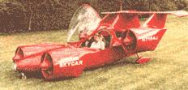

Look up in the sky! It's a bird, it's a plane, it's a... car? Believe it or not, the fantasy animation of The Jetson's TV show is about to become a reality with the introduction of the first-ever car that flies: the Moller Skycar.
The four-seat, red winged car was designed by chief engineer Paul Moller at his Davis, California-based company, Moller International. It is propelled by eight rotopowered engines that allow it to take off, land and hover like the "power lift" on a military Harrier jet. "It's truly ingenious," says Moller. "I'm absolutely certain that if these engines had been invented in the year 1900, we would have never seen the piston engine."
The rotary engine was invented by Felix Wankel some 50 years ago and instead of piston valves, rocker arms and camshafts, this engine uses one efficient triangular part that rotates inside a peanut-shaped combustible chamber. Moller and crew have tinkered and improved the machine so that it can generate 1,000 horsepower, run on kerosene, gasoline or diesel and can reach speeds of up to 350 miles per hour at altitudes of up to 30,000 feet. And because it is lightweight, fuel-efficient and produces surprisingly low emissions the skycar is environmentally sound.
"The resulting emissions will be much lower than those of an automobile engine, because [th e Skycar] never idles," explains Moller. "You're either taking off or flying or you're not running the engine. Plus, we've already run it on natural gas and propane, and I'm sure we could make it run on recycled french fry oil from McDonald's."
Vegetable oils aside, the Moller Skycar is poised for its first test flight by the end of the year, while awaiting certification by the U.S. Federal Aviation Administration. If all goes well and Moller can interest Chrysler or Boeing in the reality of the product, the Skycar could take off in the next five to ten years.
Moreover, you may not even have to know how to fly to use one. Moller's vision includes a preprogrammed computer network of Skycar routes that will allow anyone to cruise down to their local vertiport, buckle up, press a button and go.
"It's difficult to envision that," says Moller. "But a lot of people thought the automobile was a novelty in 1900 and by 1915 everybody owned one. That's 15 years of technology that was moving a lot slower than it is today. I think you're going to see a very rapid [interest] once we demonstrate the Skycar." Ladies and gentlemen, prepare for liftoff.
-Sam Martin
|
|
|
 |